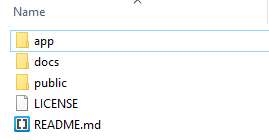

Setting up Falcon Framework is simple to get running, as everything in the framework that references a path utilizes one or two files, meaning whenever you change your project's location, you don't have to frantically search for paths to fix. When you download Falcon Framework and extract it, you'll have the main folder that contains other folders like /app, /docs, and /public. We'll call this the "root" folder.
While /app and /docs should remain as they are, the "public" folder you may want to rename depending on your server host or filesystem. If your host OS is Ubuntu 14.04 and you're using a VPS for example, your public folder for Apache would probably be /var/www/. This means the root contents of Falcon Framework would be placed in /var/, and you would rename your public folder to www. Where your public directory is, is dependent on the filesystem and whether or not you're using a VPS or shared hosting, in which case you'd rename your public folder to public_html and leave the root contents in the chrooted / directory.
If your site or project using Falcon Framework is going to be in the root of the public directory (eg. your domain is "http://myproject.com/" and your app is right in the root of this domain), you can stop here. If you want your project to be in a different directory though (such as http://myproject.com/project/), read below.
It's not too difficult to have your app function in a different public directory than root, it just requires the editing of a few files and moving the contents of the public folder. Firstly, you're going to want to create the directory for your app (such as [public root]/project/), then you're going to move the contents of the public folder to this new directory.
You will now need to adjust the path in the index.php file that lies in the public directory you just created, specifically line 11.
require_once('../app/init.php');
You'll want to change this as it's a relative path. If for example your path for where you want your project to be publically accessible is /var/www/project/, and the framework is located in /var/, then you'll want to change the path to the following;
require_once('../../app/init.php');
Now, only two files require minor edits. Also in the public directory is the .htaccess file, what's important is line 4. You want to edit the following line;
RewriteBase /
You want the part after "RewriteBase" in the rewrite rule to point to the public directory of your project. Again for example, if your app was in "http://myproject.com/project/", you would change it to the following;
RewriteBase /project
Finally, you just need to edit the path on line 78, the "root macro", to point to the same path as it was pointing to in the RewriteBase rule edit in the .htaccess file above. Your project should now be up and running the sub-directory you want, however for the most part you'll probably want your app in the root public directory anyways and build the rest of your app around the framework.